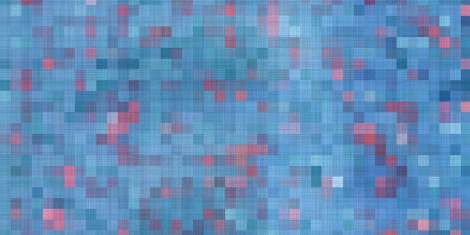

The Myth of Pixel Perfect
2021-11-27

As a designer it's common to see job listings with the requirement of "Pixel Perfect" design skills. But what exactly do they mean by Pixel Perfect?
Companies are looking for designers who can create perfect graphics and UI layouts across all device types and sizes.
The purpose of this post is to demonstrate that Pixel Perfect design is a myth and designers need to erase it from their vocabulary.
Below are 5 examples of how Pixel Perfect design is not possible.
1. Pixel
To deconstruct this myth let's start by talking about the humble pixel.
What exactly is a pixel anyway?
On any digital screen there is an addressable grid of square picture elements, or pixels. Each individual tiny square light is made of a vertical stack of red, green, and blue colors.
A pixel can light up all of these individual elements for white. None for black. Or, some percentage of the three colors combined to create other colors.
But, not all pixels are created equal. Cheap screens use larger pixels with poorly aligned stacks which display ghost outlines and fuzzy images. While more expensive screens use smaller more precisely aligned stacks that create clear images.
2. Resolution
Resolution is the amount of pixels within the given height and width of a screen. Some screens have more pixel density than others. Which means the same size screen can have smaller, more tightly packed pixels resulting in a shaper image.
The resolution and pixel density of screens varies wildly across different device types like smart phones, tablets, laptops, desktops, and large TV's.
Given the physical limitations of the screens we use to view digital content "Pixel Perfect" has never existed.
3. Web Browsers
Up until recently the dominant web browsers: Chrome, Firefox, Safari, and Edge, all used different rendering engines. Which means the same HTML and CSS code used to create a web page would look different across all these browsers.
Most Graphic and UI Designers don't write HTML and CSS code. They work in design software like Adobe Illustrator or Adobe XD. Designers have no control over how the web browsers will render the code and display their design.
4. Developer Skill
Its up to Front-End Developers to write HTML and CSS code to display the designer's vision in the browser. Front-End Development is a huge field with multiple constantly evolving technologies.
Some developers might not know how to translate a complex design into a working HTML and CSS web page. So they will use their limited skills to approximate the design.
5. Responsive Web Apps
To further complicate the situation Front-End Developers must write the HTML and CSS code so that the web page will resize itself to fit whatever screen it's displayed on. This is a difficult process and requires workarounds for complex designs.
This means the same design will look slightly different based on the size of the screen its being viewed on.
Summary
Given the layers of technology and the mix of developer skills required to create web pages. It's clear that "Pixel Perfect" designs across all devices are not possible.
Nothing is perfect and perfection is overrated.
Its better for companies to focus on positive equivalent user experiences.